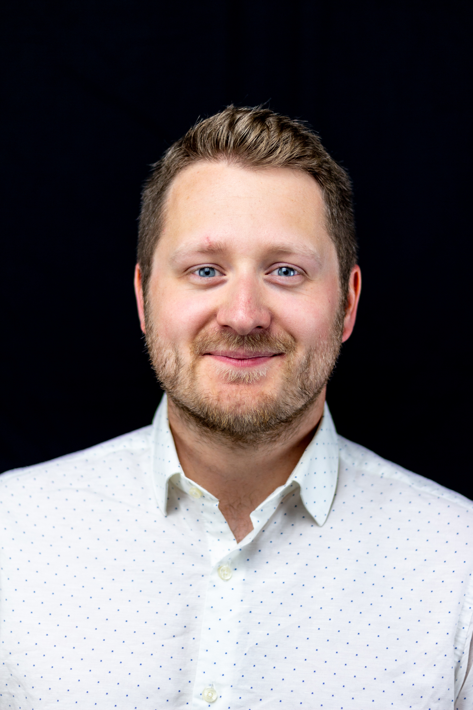

VDW Projects & Solutions werd opgericht door Wouter Van De Wiele en ondersteunt zowel industriële als residentiële elektrische projecten. De focus ligt op een combinatie van technische expertise, duidelijke structuur en een aanpak die ook in de praktijk werkt.
In industriële omgevingen gaat het vaak om elektrische infrastructuur, middenspanning, energiedistributie en de voorbereiding en opvolging van complexe projecten. De rol bestaat daarbij uit engineering, werkvoorbereiding, technische coördinatie en ondersteuning tijdens uitvoering.
In residentiële projecten ligt de nadruk eerder op veilige, conforme en toekomstgerichte installaties zoals laadpalen, renovaties en energiebeheer. Daarbij staat een nette uitvoering en duidelijke communicatie met de klant centraal.
Door technische kennis te combineren met projectmatige opvolging ontstaat een aanpak die niet alleen correct op papier staat, maar ook werkbaar is op de werf en in uitvoering.
